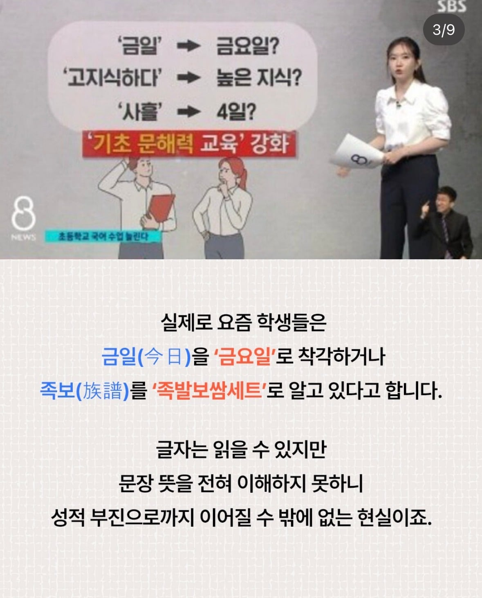

2028 교육과정에 한자교육 부활 예정
댓글
그렇게 책 많이 안읽었지만 맥락으로 뜻을 유추 가능하게 만드는게 한자교육 아닐까요
중국어랑 한문이랑은 다른거지
아시아는 한문문화권이고
한글도 수많은 단어들이 한문에서 파생되었기 때문에, 천자문정도는 그냥 배워놓으면
커서 읽고 쓰지는 못해도, 한글 단어를 봤을때 댸략적인 단어의 뜻을 연상시킬 수도 있지
하늘천 땅지 검을현 누를황 이거 한문으로 쓸 수 잇는 사람 누구겠냐.
현무함은 검은돌이다. 황산은 누렇겠네 이렇게 떠올리는거지
꼭 배우지 말아야하는 적대국가의 북한말 같은 것도 아니고, 나쁘지않다고 본다.
한자교육이 문제가 아니고... 책을 안읽음
맞춤법이나 기본 상식 어휘력이 딸리고 이런 건 독서량 늘리면 해결됨
이게 맞음 ㅋㅋ 한자 몰라도 책 많이 읽으면 해결될 일인데 죄다 숏츠만 보고 앉았으니
요즘 어지간한 강남 학부모들은 독서 문해력 교육을 따로 시킨다.
우리나라 언어의 근간이 한자 인데 안쓴다고 그게 바뀌나..
나 한자 존나 몰라도 다 이해함
걍 쓰는 단어만 쓰고 모르는 단어쓰면 틀딱이라고 알려고도 안하니 발전이 없는거
중국어 강제 학습 이런 것도 아니고, 한자 문화권에서 한자 좀 알면 나쁠 건 전혀 없는듯
족발보쌈세트는 신기하네 ㅋㅋㅋㅋㅋ
웃긴게
저거 반대여론이 중국어를 왜 가르치냐라서 어이가 없음
"대한민국 / 한국"이 한자어인거 모르는 빡대가리들한테 뭐라고 설명해야될지 모르겠더라
갑골문자 => 상형문자 => 한자 => 국가별 파생언어(중국어, 일본어, 한국어) => 각국 언어의 문화적 발전
이 개념을 이해시킬 용기가 없었음
반대로 중국인이 만물 중국 기원설이라
세상의 모든 한자도 중국꺼다?하는 주장인가 싶기도함
한자 대부분 까먹긴했는데 초반에 배워두면 도움되긴함
gpt-6 아스트라 나와서 난리인데 한쪽에서 틀딱새끼들은 한자배워라 이지랄하고있네ㅋㅋㅋㅋㅋㅋ 어휴
여기만 봐도 초딩때 한자 1,2,3급 땄음이 인생 업적인 애들 넘처나잖냐 ㅋㅋ
효율 따지면 독서량을 늘리는 게 더 좋아 보이는데
족발보쌈ㅋㅋㅋㅋㅋㅋ
한자랑 문해력은 좆도 상관이 없음
짤에 예시로 나온 것들 중에서 사흘은 아예 순우리말임
ㅋㅋㅋㅋ
교육과정 달라진다고 애들이 달라지겠냐ㅋㅋ 점점 대갈텅텅인 애들만 들어오던데..그냥 죄다 스몸비들임.
https://m.fmkorea.com/best/3679604329
난 옛날에 이 글 본 이후로 한자 교육은 반드시 있어야 한다고 신념 생김
진짜 별로같은데.. 글자별 뜻의 맥락이 다수의 용례로 스스로 정리되는거지
그게 한자 음훈을 따로 공부해야하는거라고는 생각 안함
인터넷 용어의 사례로만 봐도
신조어들의 원류 - 파생만 봐도 대략적으로 뜻을 짐작할 수 있음. 한자냐 아니냐의 문제가 아니고
그리고 근본적으로 수업시간의 총량이 정해졌기 때문에
결국 한자를 넣겠다는건 무언가를 빼겠다는 말임
그 정도로 필요한가?
문해력이 나빠진건 이미 드러난 현상이긴 한데,
그걸 역으로 돌리는 방법이 한자 교육이라는게 잘 붙지는 않아보임
갈수록 글에 대한 노출 절대량이 적은게 제일 큰 문제 아닌가?
일본도 한자 쓰잖아
족발보쌈세트는 ㅈㄴ 웃기네 ㅋㅋㅋ
뭔 개소리야 그냥 공부량이 적고 책을 안 읽어서 그런 거잖아
이런 개씹빡통소리는 어떻게 한달에 한번꼴로 올라오는것도 모자라서
이젠 국가단위로 검토한다 그러냐
동조하는 빡통들도 다 같은수준이거나 한자배운게 인생업적인 틀딱들밖에 안남아서 그런듯.
한자든 뭐든 배워서 나쁜 건 없지
근데 한국어 잘하려면 한자 배워야한다는건
그냥 자기 대가리가 어떻게 굴러가는지도 모르는거 자랑하는것밖에 안됨
우리말에 한자어가 많아서 한자를 배워야 한다는 사람은 생각을 좀 해봐라
한자어라도 한자를 알아야 뜻을 알수있는게 아닌데, 한자를 왜 배워야 하냐?
나는 지들 대가리가 글을 어떻게 인식하는지 본인도 이해를 못해서 그런거라고 생각함
천국의 천이 하늘이고 국이 나라인건 걍 병신이 아니면 누구나 알 수 있는것임
혁명의 혁이 가죽 혁자고 명이 목숨 명자인데, 이걸 한자 안다고 뜻이 유추가 되냐?
반대로 모일 사 모일 회 자를 알면
회사, 사회 << 이게 무슨뜻인지 파악이 됨? 두 단어 차이를 알 수 있음??
지들 대가리에서 나오는게 한자를 아는게 아니라 ‘단어’를 알고 거기에 한자를 같다붙이는 거라는걸
웰케들 못받아들이는지 이해를 못하겠음
한자를 보고 의미를 유추할 수 있다는 자체가 쉬운 단어라서 되는거고,
그런 쉬운 단어 의미를 이해하지 못하는건 한자를 몰라서가 아니라 그냥 능지가 부족한것임
요즘 애새기덜이 '혼숙이 혼자 숙박이에요?' 이지랄 싸는건 한자를 안배워서가 아니라
그냥 글을 안읽어서라는거임
pre-가 라틴어의 prae-에서 왔는지 몰라도 precursor, prediction에서 pre-가 이전을 뜻하는건 알 수 있지.
pedestrian, pedal의 ped가 라틴어 pes-에서 온 걸 몰라도 ped가 발과 관련된 건 알 수 있음.
한국어도 화재, 화상, 화형의 화가 불과 관련되어있고, 화장실의 화랑은 다르다는건 한자를 몰라도 알 수 있음
한자를 배워야 한다는 소리는 어원이 같은 프랑스어, 독일어를 배우자는걸 넘어서
그 어원이 되는 라틴어 어근을 배우자는것도 넘어서
그리스 문자로 어근을 외워야 한다는 소리다.
polydactyly (다지증), brachydactyly (단지증)에서 dactyl이 손가락을 뜻하는 걸 알면 되는데, 그리스어로 δᾰ́κτῠλος라고 쓰고 읽는 법을 배우자는 소리지
반박 안받음.
인생에 3개월만투자하면 생활한자 다 배우는데 이렇게 화낼일임?
저기서 배우는 한자는 수능에서 나올급이라아니라 말그대로 초딩수준, 한자를 읽고쓸줄은 모르더라도 존재자체는 익히자는 취지임 한자는 중국,일본어도 공통으로쓰는 글자라 알아둬서 나쁠것도없는데 왜이리 풀발기냐
한자를 배우지 말자 (X)
한자는 배울 필요가 없다 (X)
한자를 안 배워서 어휘력이 씹창났다, 한자를 배우면 어휘력에 도움이 된다는 건 개소리다 (O)
근데 솔직히 한문은 배워놓으면 일본,중국 언어도 어느정도는 읽혀서 좋긴함.
획수가 씨발이라 그렇지..
웹소설이라도 많이 읽으면 문해력 좋아짐.
문학이든 웹소든 활자 가득한 매체좀 많이 읽으면 좋겠다.
나는 내가 웹소 읽으면서 이게 왜 문해력이 좋아질까 생각했는데
모르는 단어 나오면 구글에 검색하고 있음 ㅋㅋㅋ
책을 읽으면 해결되는데 솔직히 성인의 연평균 독서량이 2권 남짓인 상황에서 이거 말고 방도가 없지 않나 싶음
그리고 시발 ㅋㅋㅋ 막상 반대하려해도 한자교육이 중국어 교육이라는 빡통들 보면 진짜 필요한거 아닌가 싶어서 할말이 없음
많이 쓰는 한자어들은 쓸 줄은 몰라도 무슨 뜻인지는 인지해야함
진짜 문해력차이 하늘과 땅차이급으로 벌어짐
족보는 족발보쌈세트 맞다
공대 갈 애들은 최소한 영어가 더 유익함
이거 포도래
https://m.fmkorea.com/search.php?mid=best&search_target=title_content&document_srl=10304571348&search_keyword=%ED%95%9C%EC%9E%90&listStyle=webzine&page=1
마법천자문
중고딩때 한문수업에서 배웠던 사자성어, 속담, 옛이야기, 명문들. 살다보면 기억도 나고 쓰게도 됨. 한문시간에 배운게 없다는 사람도 있겠지만 나처럼 소록소록 기억나는 사람도 있겠지.
국어시간에 포함해서 섞어서 하는게 가장 좋을듯함
일상이나 일에서 사용되는 햇갈릴수있는 말들로 예시를 들면서하나씩 가르켜주는거지
그냥 책을 많이 읽으면 되는데,,, 난 국민학교 시절 도라에몽 만화 보는데 "악담마 식은땀이 흐른다" 라는 대사를 본 적이 있는데 그시절에는 무슨뜻인지 도저히 알 수가 없었음... 우리집에는 백과사전도 없었고. 나중에 우연히 뜻을 알게되었고 그 이후로 자연스레 익히게 됨. 금일이라는 뜻은 회사생활하다가 알게 되었고. 고지식하다. 사흘도 모두 성인되어서 알게됨. 물론 난 한자공부도 학교에서 받은 사람임. 그저 난 책을 많이 안읽은 사람일뿐임.